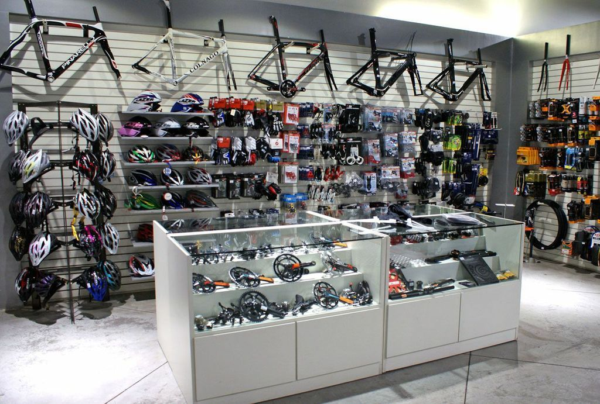
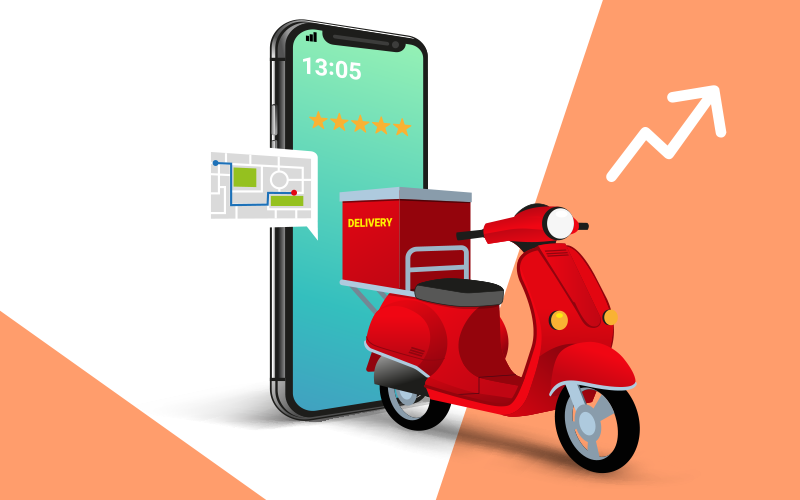

Principais Serviços
Vasta Seleção de Bicicletas
Na PedalWeb, acreditamos que cada ciclista é único, com diferentes necessidades e preferências. É por isso que oferecemos uma ampla variedade de bicicletas, desde modelos urbanos ideais para deslocamentos diários até bicicletas de montanha robustas para trilhas off-road, e também bicicletas de estrada aerodinâmicas para ciclistas que buscam velocidade. Nossa seleção inclui marcas renomadas e modelos de alta qualidade, garantindo que você encontre a bicicleta perfeita para suas aventuras.

Acessórios Essenciais e Equipamentos de Qualidade
Além das bicicletas em si, sabemos que os acessórios certos podem fazer toda a diferença na experiência de ciclismo. É por isso que na PedalWeb você encontrará uma variedade de acessórios essenciais, como capacetes de proteção para garantir sua segurança, luvas confortáveis para maior aderência e conforto, sistemas de iluminação para visibilidade em condições de baixa luminosidade, e uma variedade de ferramentas e equipamentos de manutenção para manter sua bicicleta em ótimo estado de funcionamento.
Entrega Conveniente e Atendimento ao Cliente Personalizado:
Na PedalWeb, estamos comprometidos em proporcionar uma experiência de compra online fácil e conveniente. Nossa equipe de atendimento ao cliente está disponível para ajudá-lo em cada etapa do processo de compra, desde a seleção do produto até a entrega. Priorizamos a rapidez e confiabilidade da entrega, garantindo que seus produtos cheguem no prazo e em perfeitas condições. Além disso, estamos sempre abertos ao feedback dos clientes e buscamos constantemente melhorar nossos serviços para garantir sua total satisfação.
